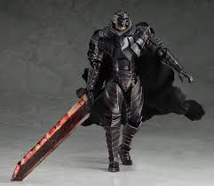
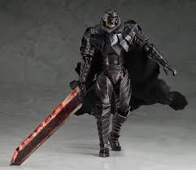

I clan selezionabili sono i Guerrieri, gli Elfi e gli Orchi.
Una volta selezionato il clan si dovrà scegliere l' immagine del profilo di gioco tra quelle disponibili.
Guerriero
 

Elfo


Orco


Le caratteristiche iniziali di un Utente appena registrato sono:
Livello: 1 , Attacco: 5, Difesa: 5 , Attacco Speciale: 1, Difesa Speciale: 1